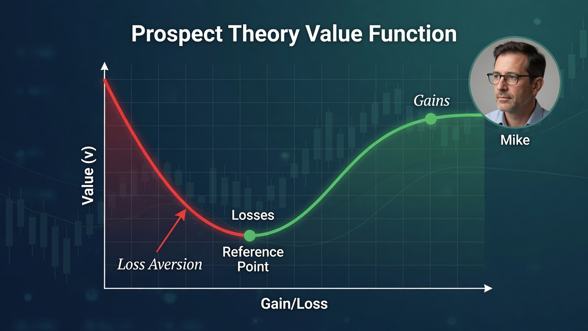

It was early 2023. Mike, a 42-year-old IT systems manager from Austin, Texas, had spent weeks researching a fast-growing Nasdaq-listed semiconductor company riding the first wave of the AI boom. He read every earnings transcript, pored over analyst reports, and ran his own simple valuation models. On a quiet Tuesday morning, he pulled the trigger and bought 500 shares at $48.
For the next seven months, the stock climbed with almost eerie consistency. By October it had reached $81. Mike's position showed a clean 69% gain, representing more than $16,500 in unrealized profit. That Friday evening he called his wife, Sarah, from the car on his way home.
"Babe, I just sold the whole thing," he said, trying to sound casual. "Locked in sixty-nine percent. Not bad for a guy who fixes servers for a living, right?"
Sarah laughed and suggested they celebrate. They went to their favorite steakhouse, ordered the good Cabernet they usually saved for anniversaries, and Mike raised his glass. "I know exactly when to take profits," he declared. "No greed here." They toasted, posted a quick family photo on Facebook, and for one night Mike felt like the smartest guy in the room.
Two months later the stock was trading at $124.
Mike told himself it was only normal profit-taking after a big run. He did not buy back in. "I'm not chasing," he muttered while scrolling through the price chart at 2 a.m. one sleepless night.
By April 2024 it had climbed to $152. Then $181. Then, as the AI frenzy accelerated through the summer, the stock kept powering higher. Every time Mike opened his brokerage app or caught a CNBC segment at the gym, a sharp pang hit him in the chest. He had walked away from more than $96,000 in additional gains, money that could have wiped out the rest of their SUV loan, funded a family trip to Europe, or gone straight into the kids' 529 college plans.
The regret was not abstract. It was visceral.
One Friday afternoon at work, Mike opened Yahoo Finance during lunch and saw the stock up another 11% after strong earnings. His coworker Jason walked past his desk and grinned. "Still holding that AI monster?" Mike forced a laugh. "Nah… sold months ago." Jason stopped, surprised. "Wait… seriously?" The polite nod Jason gave him felt worse than any insult. Mike clicked the browser tab closed and stared at his keyboard for the rest of the afternoon.
That evening Sarah noticed he was quiet. "You okay?" she asked. Mike shrugged. "Yeah… just thinking about that semiconductor stock I sold." Sarah, who had heard the celebration story many times, gave him a gentle look. "You made good money, honey. You cannot beat yourself up forever." But Mike kept replaying the moment he hit "sell" like a bad movie scene on endless loop. He imagined what that extra money could have meant. He imagined telling his kids one day, "I was right about the company… I just did not stay with it."
He never bought back in. Even when friends at work bragged about still holding the position, Mike shook his head. "I sold at $81. I am not paying three times that now. That would be stupid."
The stock eventually crossed $280 by early 2025. Mike still checks the price sometimes. He just does not tell Sarah anymore.
One night, Mike felt like the smartest guy in the room.
What Actually Happened?
On paper, Mike made money. His account showed a nice profit, and he even paid lower long-term capital-gains taxes. It looked like a textbook success story.
But the real story was far more expensive.
Mike fell victim to one of the most powerful and well-documented psychological traps in investing: the Disposition Effect. This is the tendency for investors to sell their winning stocks too early, often to "lock in gains" and feel the emotional high of being right, while holding on to losing positions far too long in the desperate hope they will come back.
Once Mike sold at $81, his brain quietly reset the stock's "reference price" to that level. Buying back at $124, $180, or $240 suddenly felt like taking a loss, even though he had never owned the shares at those higher prices. The fear of losing the profit he had already realized became stronger than the desire to capture even more upside.
The market did not betray him. His own brain did.

The Science Behind It
This behavior is not a character flaw or a lack of discipline. It is deeply rooted in how the human brain processes gains and losses.
In their groundbreaking 1979 paper "Prospect Theory: An Analysis of Decision under Risk," published in Econometrica, Daniel Kahneman and Amos Tversky upended classical economics. Before Prospect Theory, economists assumed people made decisions based on final wealth and rational expected utility. Kahneman and Tversky proved that assumption was wrong.
They showed that humans do not evaluate outcomes based on total money in the bank. Instead, we evaluate them as gains or losses relative to a reference point: usually the price we paid or the price at which we last felt "safe."
Their famous "value function" is S-shaped: concave for gains (each additional dollar of profit feels less exciting) and convex for losses. Most critically, the curve is roughly twice as steep on the loss side. Losing $1,000 hurts about twice as much as gaining $1,000 feels good.
This asymmetry, called Loss Aversion, is hard-wired into us. Evolutionarily, it makes perfect sense: for our ancestors on the savanna, the pain of losing food or territory was far more dangerous than the pleasure of gaining a little extra. The brain treats monetary loss the same way it treats a physical threat, triggering the same stress response.
In investing, loss aversion manifests as the Disposition Effect.
Kahneman & Tversky's value function: losses feel roughly twice as painful as equivalent gains feel good.
Building on Kahneman and Tversky's work, Hersh Shefrin and Meir Statman published the landmark 1985 paper "The Disposition to Sell Winners Too Early and Ride Losers Too Long" in the Journal of Finance. They combined prospect theory with mental accounting, regret aversion, and self-control problems to fully explain the pattern.
Then came Terrence Odean's 1998 study "Are Investors Reluctant to Realize Their Losses?" Odean analyzed 10,000 individual brokerage accounts and found something striking: investors sold their winning stocks at significantly higher rates than their losing ones, even when tax incentives strongly suggested they should do the opposite. The stocks investors sold early actually went on to outperform the ones they kept. In other words, by selling winners too soon, investors were systematically hurting their own returns.
This pattern has held up across decades and millions of accounts. Barber and Odean's research on trading behavior further showed that excessive trading driven by these biases destroys wealth through transaction costs, taxes, and missed compounding.
The cost to everyday investors is enormous.
DALBAR's Quantitative Analysis of Investor Behavior reports have tracked this for over 40 years. In recent years, the average equity investor has consistently underperformed the S&P 500 by 1% to 4% annually, a gap driven largely by emotional decisions like the one Mike made. Compounded over decades, that difference can turn a comfortable retirement into a stressful one.
Think about real-world examples. Thousands of investors sold NVIDIA after its first big run in the early AI boom, only to watch it continue dramatically higher. The same thing happened with Amazon after it doubled between 2009 and 2010; almost nobody anticipated it would rise another 20-fold over the next decade. The early sellers were not irrational. They simply hit an emotional threshold where the gain felt "too good to lose."
Investors do not just anchor to prices. They anchor to identities. Mike did not want to admit that the market still had opportunities after he sold because that would mean admitting his "perfect exit" was not perfect after all.
Over an entire investing career, the Disposition Effect compounds quietly. You sell the big winners early, miss the massive compounding, and then hold the dogs too long, dragging down your overall returns. The math is brutal: missing even a handful of the market's best days each year can cut your lifetime returns in half.
Your Behavioral Takeaway
The next time you feel that rush to sell a winning position "while it's up," pause and ask yourself one simple, powerful question:
"If I didn't already own this stock, would I buy it at today's price right now?"
If the honest answer is yes, then selling is probably driven by emotion, not analysis.
Here is a practical three-step mechanical exit engine you can use before any winner sale:
- Re-evaluate the fundamentals coldly: Has the company's story, competitive advantage, or growth outlook actually changed? Pretend you are starting fresh today.
- Ignore your original cost basis completely: It no longer matters. Focus only on future expected returns versus risk.
- Build rules in advance and let the math decide: Before you ever buy, set a strict trailing-stop rule or rebalancing trigger (for example, a fixed dollar-per-share floor or a percentage of portfolio rules). Once the rule triggers, the system executes, with no overrides allowed.
One more tactical idea that could have saved Mike: scale out instead of selling everything. Instead of dumping all 500 shares at $81, he could have sold 150 to 200 shares to lock in some profit and reduce emotional pressure while keeping the rest of the position riding. This lets you enjoy the win without cutting yourself off from further upside.
A mechanical exit system removes emotion from the equation before the trade is even placed.
Finally, remember the hidden cost most people ignore: every unnecessary sale creates friction, including taxes, transaction costs, and the psychological burden of deciding when (or if) to buy back in. The pain of regret is often far more expensive than the temporary discomfort of staying invested in a stock you still believe in.
Mike learned that the hard way. You do not have to.